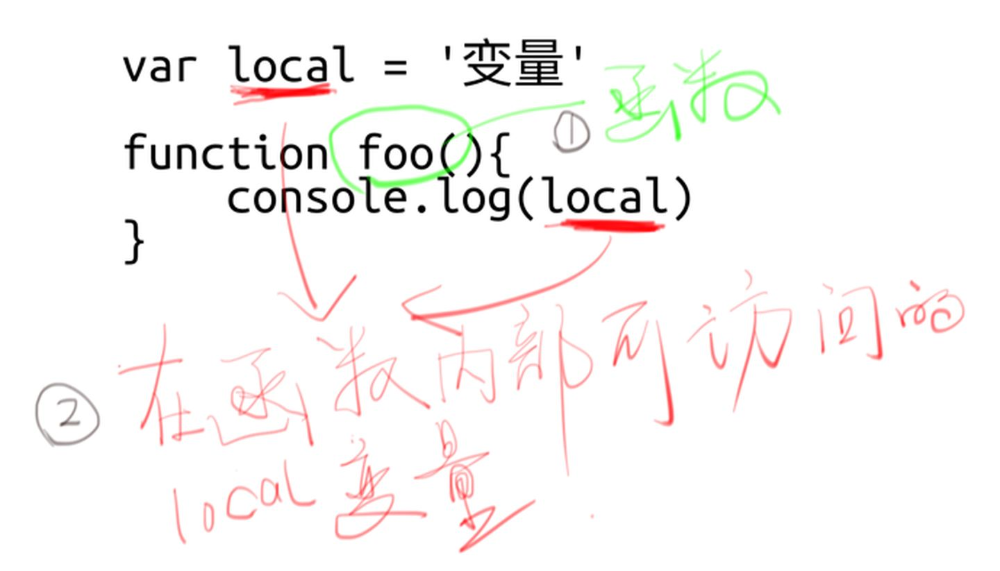

闭包
前言：
编程界崇尚以简洁优雅为美，很多时候
如果你觉得一个概念很复杂，那么很可能是你理解错了。
`

// 这里面确实有闭包，local 变量和 bar 函数就组成了一个闭包（Closure）。
function foo(){
var local = 1
function bar(){
local++
return local
}
return bar
}
var func = foo()
func()
`
闭包的作用
闭包常常用来「间接访问一个变量」。换句话说，「隐藏一个变量」。
所以需要局部变量达到隐藏变量的目的。
`
闭包是 JS 函数作用域的副产品。
只要你懂了 JS 的作用域，你自然而然就懂了闭包，即使你不知道那就是闭包！
`
example
// 假设在做一个游戏，lives为生命
// 使用局部变量来保证这个生命lives不被直接修改
// 暴露一个访问器（函数），让别人可以「间接访问」。
!function(){
var lives = 50
window.奖励一条命 = function(){
lives += 1
}
window.死一条命 = function(){
lives -= 1
}
}()